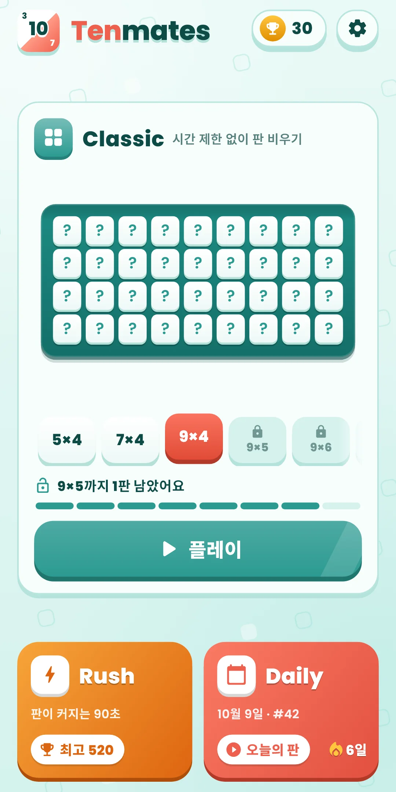
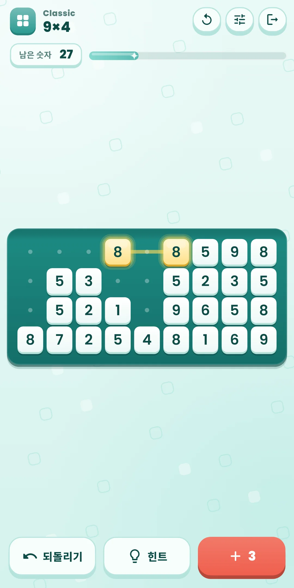
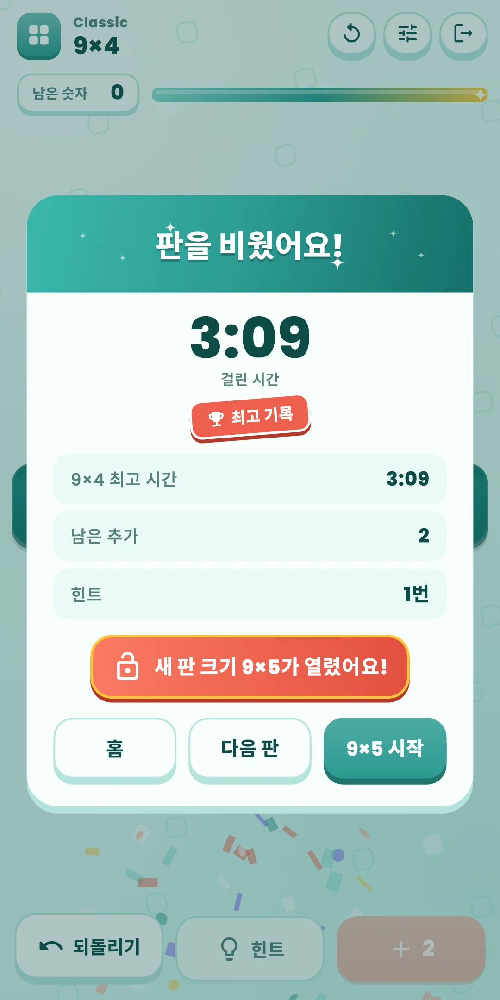
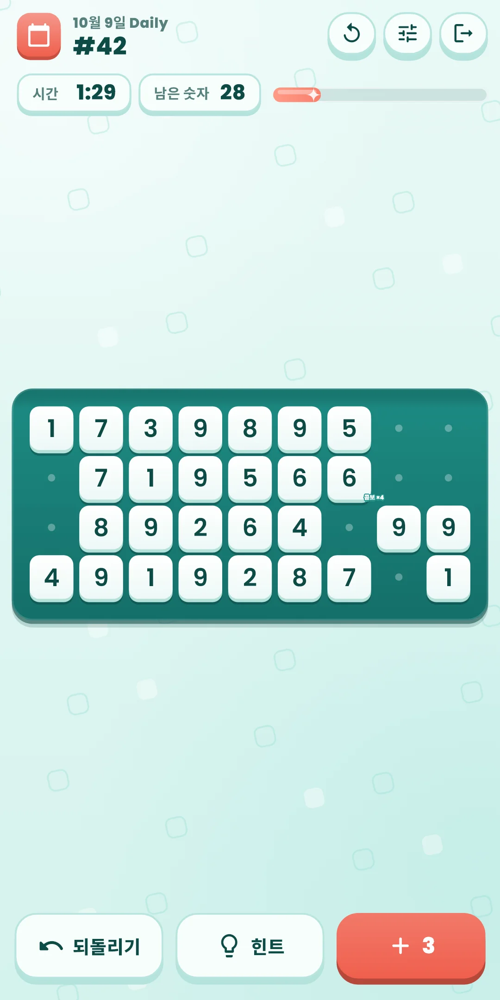
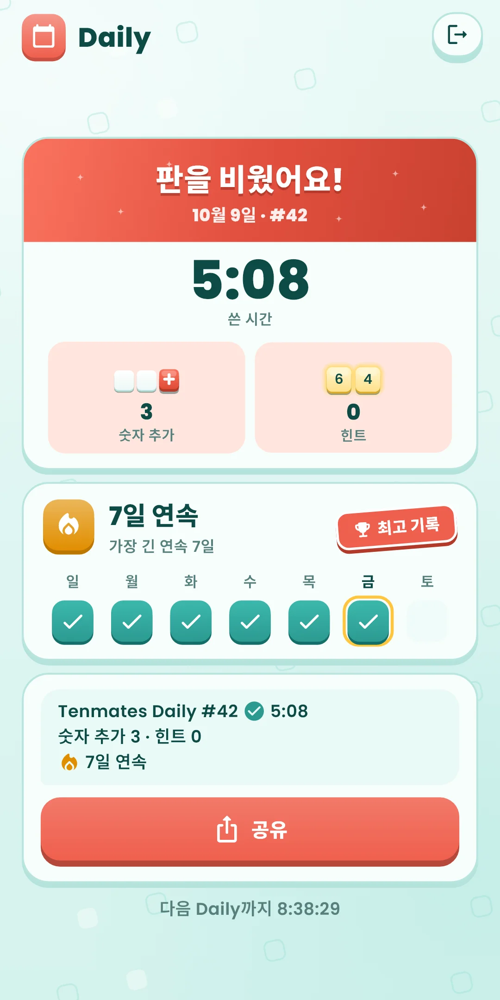
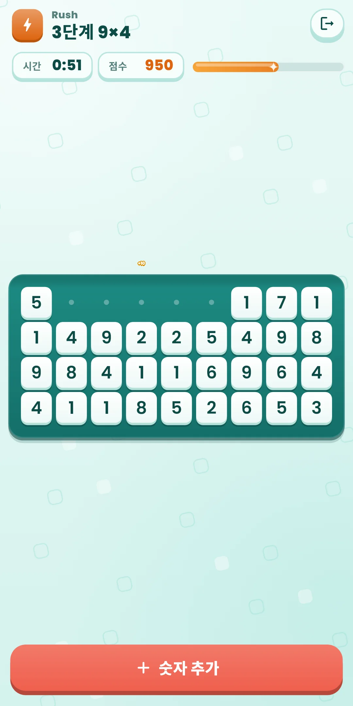
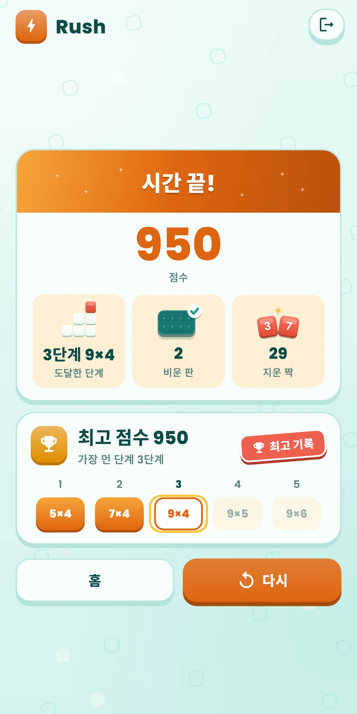
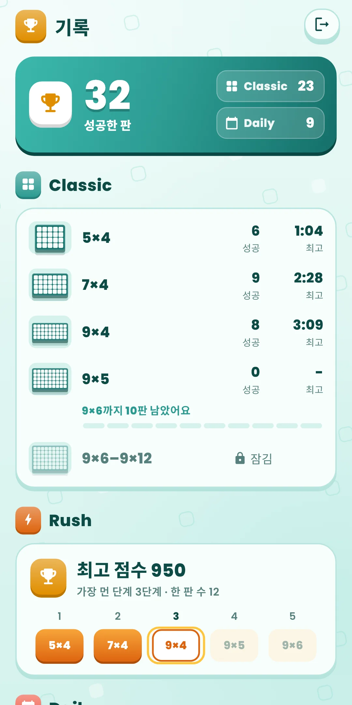

Tenmates
사용 설명서
사용 설명서








| 앱 이름 | Tenmates |
|---|---|
| 버전 | 1.0.0 |
| 개발 | Willee Project |
| 지원 플랫폼 | Android |
판에 깔린 숫자 중에서 같은 숫자이거나 합이 10인 짝을 찾아 지우고, 판을 다 비우는 숫자 퍼즐입니다.
지운 칸은 흐린 점으로 남습니다. 사이에 지운 칸만 있는 짝을 눈으로 찾을 수 있게 하려는 것입니다. 줄이 다 지워지면 그 줄은 사라지고 아래 줄이 올라옵니다.
지울 수 있는 숫자가 없으면 아래 ＋ 버튼으로 남은 숫자를 읽는 순서대로 판 끝에 이어 붙입니다. 버튼의 숫자가 남은 횟수입니다. Classic과 Daily는 판마다 3번, Rush는 무제한입니다. 덜 찬 마지막 줄의 빈 자리는 지운 칸과 같은 점으로 보입니다(다음 추가가 채울 자리입니다).
아래쪽 버튼 줄(Classic·Daily):
| 버튼 | 하는 일 |
|---|---|
| 되돌리기 | 마지막으로 한 일(지우기·숫자 추가)을 하나씩 되돌립니다. 횟수 제한이 없습니다 |
| 힌트 | 판을 끝까지 비울 수 있는 길 위의 짝을 빛냅니다. 횟수 제한이 없습니다 |
| ＋ 숫자 추가 | 남은 숫자를 판 끝에 이어 붙입니다. 버튼의 숫자가 남은 횟수입니다 |
위쪽 줄 오른쪽의 다시 하기(↻) 버튼:
| 고를 것 | 내용 |
|---|---|
| 이 판 처음부터 | 하던 판을 처음 모습으로 되돌려 다시 풉니다. Classic은 걸린 시간과 힌트도 처음부터 세고, Daily는 그날 쓴 시간과 힌트를 이어서 셉니다 |
| 새 판 (Classic만) | 이 판은 그만두고 같은 크기의 다른 판을 풉니다. 그만둔 판은 성공으로 세지 않습니다 |
지울 수 있는 숫자가 없고 숫자 추가도 다 썼으면 '숫자 추가를 다 썼어요' 패널이 뜹니다. 이번에는 실패로 보고 되돌릴 수 없습니다. 처음부터 다시 하거나 새 판을 고르세요. Daily는 새 판 대신 그만하기가 있습니다. 막히기 전에 힌트를 누르면, 이미 비울 수 없게 된 판도 비울 수 있는 곳까지 되돌릴 수 있습니다.
Tenmates Daily #12 ✅ 4:12 숫자 추가 1 · 힌트 0 🔥 5일 연속
✅는 판을 비운 날(그만두면 ❌), 그 옆은 쓴 시간입니다. 둘째 줄은 쓴 숫자 추가와 힌트, 셋째 줄은 연속 기록입니다(이틀 이상일 때만). #12는 Daily 번호입니다. 출시일이 #1이고 하루에 하나씩 늘어나, 번호가 같으면 같은 판입니다. 결과 화면에는 다음 Daily까지 남은 시간이 보입니다. 새 Daily는 기기 시각으로 자정에 열립니다.
홈 오른쪽 위의 트로피 단추로 엽니다. 단추에는 성공한 판 수가 보입니다.
홈 오른쪽 위 톱니바퀴로 엽니다. 게임 중에는 위쪽 줄 오른쪽의 조절 단추로 소리·진동·효과·큰 숫자만 바로 바꿀 수 있습니다.
| 항목 | 내용 |
|---|---|
| 효과음 | 숫자를 고르고 지울 때의 소리를 켜고 끕니다. 짝을 연달아 지우면 소리가 조금씩 높아집니다 |
| 진동 | 숫자를 고르고 지울 때의 진동을 켜고 끕니다 |
| 효과 줄이기 | 모든 효과를 한 번에 줄입니다(지우는 연출은 짧게, 움직임 없이). 켜 두는 동안 아래 효과 스위치는 꺼진 모습으로 흐려집니다. 기기의 애니메이션 끄기 설정도 따릅니다 |
| 효과 스위치 | 효과 줄이기 아래에서 효과마다 켜고 끕니다. 흔들림(줄을 지울 때 판이 '쿵' 눌림, 옆 칸이 튐, 짝이 아닌 칸의 흔들림), 번쩍임(섬광·빛·반짝임, 힌트의 깜빡임), 파편·색종이, 콤보·칭찬 글자, 움직임(두 숫자가 다가가 만나고 줄이 쓸려 나가는 움직임. 끄면 그 자리에서 짧게 사라집니다). 흔들리거나 번쩍이는 것이 불편하면 그 효과만 꺼 보세요 |
| 큰 숫자 | 판의 숫자를 크게 그립니다. 다른 글자 크기는 기기의 글꼴 크기 설정을 따릅니다 |
| 규칙 보기 | 첫 실행 안내를 다시 봅니다 |
| 언어 | 기기 언어를 따르거나 직접 고릅니다 |
| 개인정보 보호 옵션 | 광고 동의를 다시 엽니다. 동의가 필요한 지역(유럽 등)에서만 보입니다 |
| 앱 정보 | 버전, 이 설명서, 개인정보처리방침, 오픈소스 라이선스 |